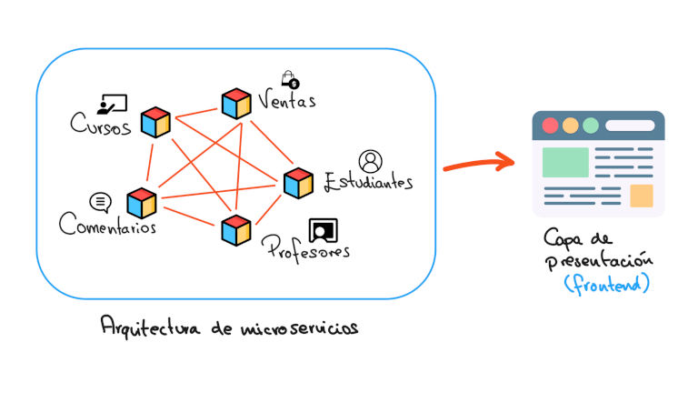

2. Microservicios
La arquitectura de microservicios consiste en estructurar una aplicación como un conjunto de servicios pequeños, independientes y desplegables de manera autónoma.

Ventajas
- Escalabilidad independiente
- Despliegue continuo
- Mantenimiento modular
Comparación con Arquitectura Monolítica
En una arquitectura monolítica todos los componentes están integrados en una sola unidad, mientras que en microservicios cada componente funciona de manera independiente.
Características Clave
- Despliegue independiente
- Comunicación mediante APIs REST
- Escalabilidad por servicio
- Tolerancia a fallos
Desventajas
- Mayor complejidad en monitoreo
- Gestión de comunicación entre servicios
- Necesidad de orquestadores como Kubernetes
Ejemplo Práctico
Una aplicación de comercio electrónico puede dividirse en microservicios independientes como gestión de usuarios, catálogo de productos y sistema de pagos, cada uno ejecutándose en contenedores separados.